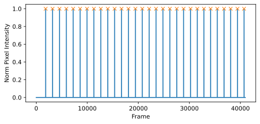

Experimental Dataset, Video Browser, Python Library
The videos are recordings of experimental sessions lasting more than 30 minutes, during which the mouse is head fixed and filmed from the side. All subjects are spatially aligned so that the eye occupies the same position across recordings. Six subjects were recorded during Direct Emotional Response (DER). For each subject, five shock intensities were presented, with six trials per intensity, for a total of 30 trials per subject.
In the raw videos, the triggers are encoded in the pixels of the upper left corner of each frame. When the pixel value exceeds 200, the trigger is considered on. During preprocessing, the first 10 pixels in both height and width were cropped to remove the trigger region from the visual stimulus.
This is the normalized plot of the upper left corner of each frame. The X markers indicate the detected triggers.
The Python library included with the DER Videos dataset provides a high level API to load videos, extract trials, compute movement indices, and generate visualizations. You can browse the full documentation below.
📘 Open API Documentation